Original Website 'World of Female Avatars'
'World of female avatars' is a project for expanded understanding of women and their relation to their body. By using the internet as an artistic survey media as many different entries from different cultures as possible will be collected. The public call for female body pictures and text with personal statements about the body is going to be presented at this net art project. The submitted pictures are used for a digital collage to create new bodies - The avatars of female body, which will live in the cyber World of female avatars from now on. Just visit the virtual world and click for the virtual bodies and their statements!
As women always have been and are strongly connected to their body in a positive and/or negative sense, it could be supposed there is also a relation to it. In times of virtual reality, avatar and cyborg the body is not important in its natural matter anymore although in reality still in use. Adorno und Horkheimer described the "Interest on the Body" as deadly because of the disturbed use of the body as only in parts of prosthesis. Discussing the body in Post Modern Society means also to discuss different developments which changed the natural body in a cultural and an economic object. What remains from the body, if the body still exists? Some theories view the body as only natural, some as antagonistic to technology. Paul Virilio describes the body as static and passive, which is looking for action in multiple overbidding. The rise of New Media means for Virilio an important break between man and woman because of the absence of body presence. To be in virtual space like an angel as a third sex is a position of future androgyny. The body as artistic material in the early seventies is another major aspect of this project. Instead of using the own artistic body, others shall be involved in the project. By receiving different input sources new bodies are going to be constructed on the net.
- Body and technology
- Body and sex
- Absent body
- Body and picture
- Body and violence
- draft of third sex
- emphasis of traditional visions of sex
- disclosure of construction of social sex (gender)
- development of new body language
ArtNetLab
ALU
FRI
Remake Website 'World of Female Avatars'
The remake of 'World of Female Avatars' reimagines the platform as a space that holds reflections, heartfelt cries, and artistic expressions in the form of sincere texts by women. In my variation of the website each square represents a hidden envelope, holding intimate notes written by women to their future selves.
The asssignment is to create a website that acts as a revival of a dead website (Original Website) using only HTML and CSS.
I have collected 45 texts from original website and divided in three categories:
Focuses on navigating gender roles, challenging societal expectations, reclaiming autonomy, and defining the self beyond traditional binaries or social norms.
Focuses on the friction between internal self-worth and external standards of beauty, media/fashion objectification, self-doubt, aging, and the journey toward self-love or empowerment.
Focuses on abstract, philosophical, or psychological reflections on the body—including physical limitations/health, trauma/abuse recovery, artistic representation, and disembodiment in digital space.
Category differences are depicted through different shapes and colors of squares (blank envelope placements). Some of them are filled, while others just have a colored border. There is no deeper context here—this element is used purely for visual aesthetics.
My redesign preserves the essential elements of the original platform—its color palette, cyber aesthetic, and structured yet chaotic grid. At the same time, it places greater emphasis on text readability and a cleaner visual representation of the 'World of Female Avatars'.